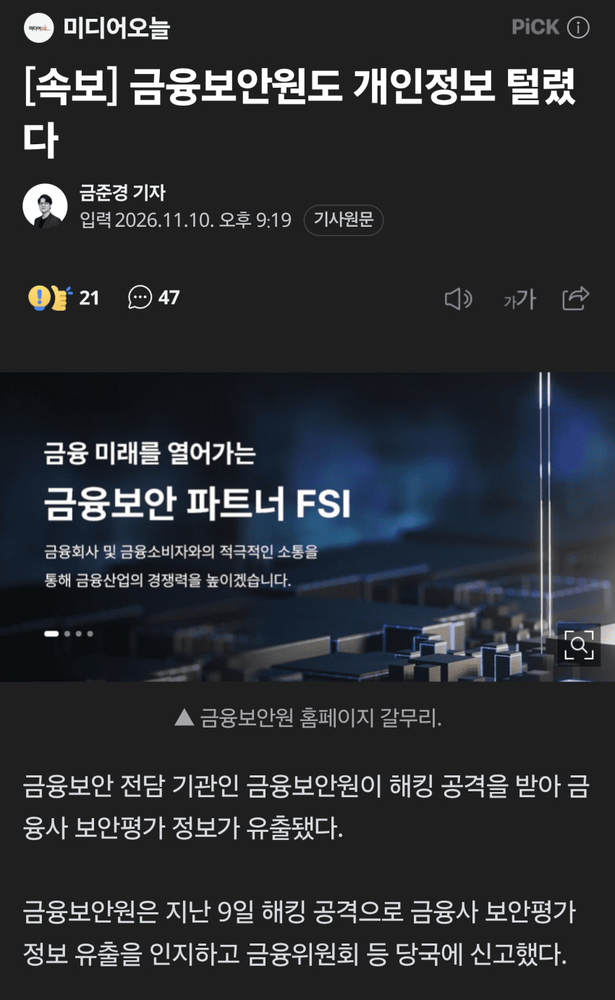
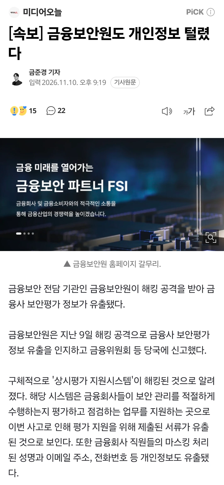
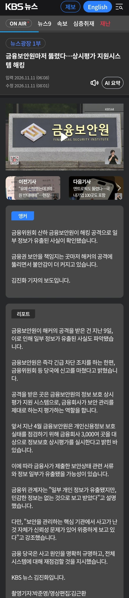
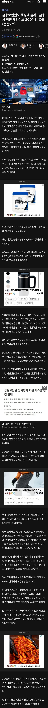
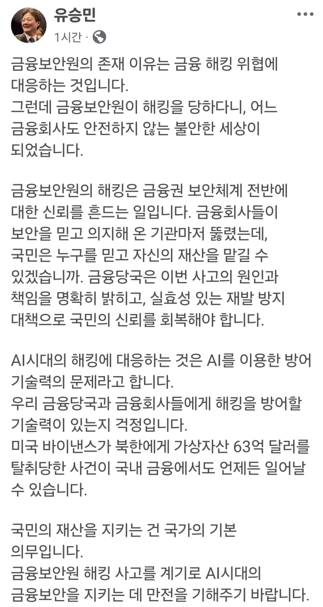
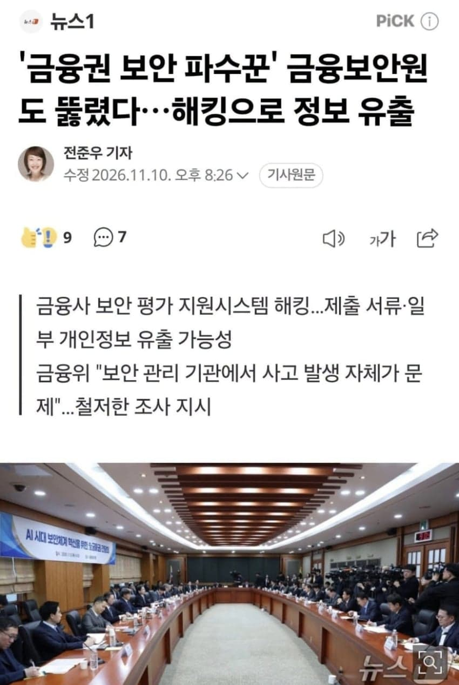

K-보안 물로켓찌익ㅋㅋㅋㅋㅋㅋㅋㅋㅋㅋㅋㅋㅋㅋㅋㅋㅋㅋㅋㅋㅋㅋㅋㅋㅋㅋㅋㅋㅋㅋㅋㅋㅋㅋㅋㅋㅋㅋㅋㅋ


다행히 직원 개인 정보만...
- dc official App
- [속보] '금융보안 문지기' 금융보안원마저 해킹으로 정보유출‥긴급 차단
[속보] '금융보안 문지기' 금융보안원마저 해킹으로 정보유출‥긴급 차단조치 (2026.11.10/뉴스데스크/MBC)
- 금융보안원마저 뚫렸다 보안평가시스템 해킹 개인정보 유출




- dc official App


댓글
수집 당시 댓글 151개
· S＆P500 · 11.10 22:18:47
· S＆P500 · 11.10 22:18:54
· S＆P500 · 11.10 22:19:06
· S＆P500 · 11.10 22:20:04
· S＆P500 · 11.10 22:20:31
· ㅇㅇ · 11.11 02:15:01
· ㅇㅇ13 · 11.11 02:35:03
· ㅇㅇ13 · 11.11 02:37:36
· ㅇㅇ13 · 11.11 02:40:33
· ㅇㅇ14 · 11.11 04:57:26
· ㅇㅇ · 11.11 07:47:26
· ㅇㅇ15 · 11.11 08:02:44
· ㅇㅅㅇ · 11.11 08:25:02
· ㅇㅇ · 11.11 13:01:42
· ㅇㅇ16 · 11.11 13:21:24
ㅇㅇ4 · 11.10 22:11:35
· ㅇㅇ · 11.11 02:08:44
느금마 · 11.10 22:22:10
ㅇㅇ · 11.10 22:24:38
ㅇㅇ · 11.10 22:28:52
ㅇㅇ5 · 11.10 22:29:15
도떼녀 · 11.10 23:01:34
야한미쿠 · 11.10 23:02:58
ㅇㅇ8 · 11.10 23:47:17
ㅇㅇㅇㅇ · 11.11 00:30:04
· ㅇㅇ · 11.11 00:33:59
· 친일친미친중혐한 · 11.11 09:58:20
ㅇㅇ10 · 11.11 01:32:11
아스테카 · 11.11 01:38:34
ㅇㅇ11 · 11.11 01:40:49
ㅇㅇ · 11.11 02:07:07
ㅇㅇ · 11.11 02:40:36
옹송망송 · 11.11 08:49:35
· ㅇㅇ · 11.11 18:56:57
· ㅇㅇ · 11.11 18:57:28
땨뗘(봇) · 11.11 18:55:07
ㅇㅇ · 11.11 18:56:16
· ㅇㅇ · 11.11 18:56:20
· ㅇㅇ · 11.11 18:57:08
· ㅇㅇ · 11.11 19:02:22
ㅇㅇ · 11.11 18:56:33
황족 · 11.11 18:56:43
ㅇㅇ · 11.11 18:56:54
ㅇㅇ · 11.11 18:57:09
ㅇㅇ · 11.11 18:57:11
샨테 · 11.11 18:57:40
· 샨테 · 11.11 18:58:00
ㅇㅇ · 11.11 18:58:02
ㅇㅇ · 11.11 18:58:50
ㅇㅇ · 11.11 18:59:01
ㅇㅇ · 11.11 18:59:26
ㅇㅇ · 11.11 18:59:33
ㅇㅇ · 11.11 18:59:41
ㅇㅊ4 · 11.11 19:00:18
ㅇㅇ · 11.11 19:00:20
· ㅇㅇ · 11.11 19:01:46
ㅇㅇ · 11.11 19:00:22
DC전사쿠루미쨩 · 11.11 19:00:26
ㅇㅇ · 11.11 19:00:30
ㅇㅇ · 11.11 19:00:47
ㅇㅇ · 11.11 19:00:52
· ㅇㅇ · 11.11 19:08:16
ㅇㅇ · 11.11 19:00:54
ㅇㅇ · 11.11 19:01:01
헌트 · 11.11 19:01:06
ㅇㅇ · 11.11 19:01:10
ㅇㅇ · 11.11 19:01:12
· ㅇㅇ · 11.11 19:01:24
ㅇㅇ · 11.11 19:01:40
ㅇㅇ · 11.11 19:02:24
ㅇㅇ · 11.11 19:02:25
msnr · 11.11 19:02:27
· msnr · 11.11 19:02:54
· msnr · 11.11 19:03:48
ㅇㅇ · 11.11 19:03:11
only_팩트 · 11.11 19:03:20
xopowo · 11.11 19:03:33
ㅇㅇ · 11.11 19:03:55
· ㅇㅇ · 11.11 19:03:59
루시퍼 대리자 · 11.11 19:04:17
ㅇㅇ · 11.11 19:04:56
· ㅇㅇ · 11.11 19:05:21
· ㅇㅇ · 11.11 19:05:57
씹덕1012일차 · 11.11 19:05:10
ㅇㅇ · 11.11 19:05:24
ㅇㅇ · 11.11 19:05:46
ㅇㅇ · 11.11 19:06:41
ㅇㅇ · 11.11 19:06:44
ㅇㅇ · 11.11 19:06:46
ㅇㅇ · 11.11 19:08:11
이쯤되면안털리는곳이이상한곳아님?
ㅇㅇ · 11.11 19:08:44
· ㅇㅇ · 11.11 19:09:41
ㅇㅇ · 11.11 19:09:37
ㅇㅇ · 11.11 19:10:16
걍
과징금
없애라
의미없네
· ㅇㅇ · 11.11 19:10:56
개나소나
털리는데
과징금때릴
주제는됨
ㅇㅇ · 11.11 19:10:30
공산당척결AWEB · 11.11 19:10:39
ㅇㅇ · 11.11 19:10:40
ㅇㅇ · 11.11 19:10:43
ㅇㅇ · 11.11 19:12:55
ㅇㅇ · 11.10 21:40:52
ㅇㅇ · 11.10 21:42:32
ㅇㅇ · 11.10 21:42:41
· ㅇㅇ1 · 11.10 21:50:03
삭제됨 · 11.10 21:46:20
· S＆P500 · 11.10 22:05:53
ㅇㅇ · 11.10 21:47:04
ㅇㅇ · 11.10 21:49:57
· S＆P500 · 11.10 22:06:48
삭제됨 · 11.10 21:51:02
· ㅇㅇ · 11.10 21:56:00
· ㅇㅇ · 11.10 22:05:23
· S＆P500 · 11.10 22:08:24
· ㅇㅇ7 · 11.10 23:02:25
ㅇㅇ · 11.10 21:51:22
ㅇㅇ2 · 11.10 21:52:09
ㅇㅇ · 11.10 21:52:46
· ㅇㅇ · 11.10 21:55:28
ㅇㅇ · 11.10 21:56:58
ㅇㅇ · 11.10 21:59:28
야쿠르트스왈로즈 · 11.10 22:01:48
S＆P500 · 11.10 22:03:42
· ㅇㅇ3 · 11.10 22:05:56
· ㅇㅇ · 11.10 22:06:26
· ㅇㅇ3 · 11.10 22:07:24
· S＆P500 · 11.10 22:07:43
· ㅇㅇ · 11.10 22:08:02
· ㅇㅇ3 · 11.10 22:08:29
· ㅇㅇ3 · 11.10 22:08:47
· S＆P500 · 11.10 22:08:47
· ㅇㅇ3 · 11.10 22:09:07
· S＆P500 · 11.10 22:09:31
· ㅇㅇ · 11.10 22:09:54
· ㅇㅇ3 · 11.10 22:10:15
· ㅇㅇ3 · 11.10 22:10:37
· S＆P500 · 11.10 22:10:57
· ㅇㅇ3 · 11.10 22:12:37
· S＆P500 · 11.10 22:13:37
· S＆P500 · 11.10 22:13:46
· S＆P500 · 11.10 22:14:07
· S＆P500 · 11.10 22:14:26
· ㅇㅇ3 · 11.10 22:14:28
· S＆P500 · 11.10 22:14:42
· ㅇㅇ3 · 11.10 22:15:11
· S＆P500 · 11.10 22:15:33
· S＆P500 · 11.10 22:15:46
· ㅇㅇ3 · 11.10 22:16:18
· S＆P500 · 11.10 22:16:19
· S＆P500 · 11.10 22:16:48
· ㅇㅇ3 · 11.10 22:17:35
· S＆P500 · 11.10 22:17:47